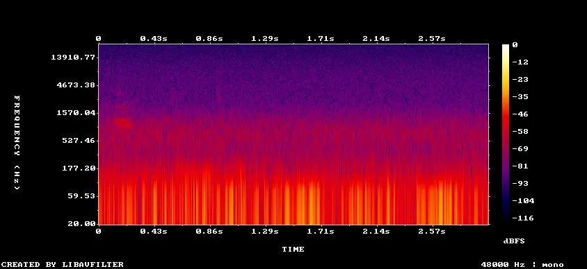

Machine identification, not a verified record:
BirdNET assigns a confidence to each 3-second frame; it does not confirm that a
species was present. Confidence is not a probability, and a high score on one
frame is not a record. Geophony, distant human sound, and species outside the
filtered list can all produce confident errors. Listen to every detection before
citing it.
Audio is off. Enable it once, then hover over the timeline.

Select a detection to see its spectrogram.
The pale band marks the ranges that were analysed. Each mark is one
3-second detection, taller and darker with higher confidence. Hover to select
the nearest detection; playback starts after a short pause and stops at the end
of that frame. Click to play immediately, which also copies the start timecode;
the locked detection keeps an orange marker so you can see where playback sits
after the pointer moves on. Select a species in the table to show only its
detections. The preview is lossy
Opus at a reduced bitrate; use the source files for verification.
(c) Frank Sengpiel, some rights reserved (CC BY), uploaded by Frank Sengpiel
Gray Heron
Ardea cinerea
1
0.264
02:37:10
02:37:10
Reference photographs come from iNaturalist and are stored verbatim in this package; each is licensed by its photographer as credited above. Full details are in credits.json. They show what the species looks like. They are not evidence that it was present.
Taxon identifiers
The same species in the other databases, matched on iNaturalist taxon ID rather than on name. Machine-readable in taxon-ids.json, which also keeps the identifiers not shown here.
Identification by BirdNET, developed by the K. Lisa Yang Center for Conservation Bioacoustics at the Cornell Lab of Ornithology with Chemnitz University of Technology. The BirdNET models are licensed CC BY-NC-SA 4.0; the non-commercial condition applies to these results. Cite: Kahl, S., Wood, C. M., Eibl, M., & Klinck, H. (2021). BirdNET: A deep learning solution for avian diversity monitoring. Ecological Informatics, 61, 101236.